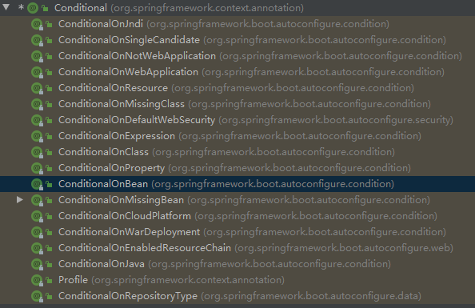

@Configuration 告诉SpringBoot这是一个配置类
1. 给容器中添加组件 容器中的组件默认为单例的
1.0 Bean注解使用 文件上传解析器
1 2 3 4 5 6 7 8 9 10 11 12 13 @Bean @ConditionalOnBean(MultipartResolver.class) @ConditionalOnMissingBean(name = "multipartResolver") public MultipartResolver multipartResolver (MultipartResolver resolver) return resolver; }
1.1 添加组件 1 2 3 4 5 6 7 8 9 10 11 @Configuration public class MyConfig @Bean public User user01 () User user = new User(); user.setName("张三" ); return user; } }
验证方式：在主程序中打印容器中是否有注入的组件
1 2 3 4 5 6 7 8 9 10 11 12 @SpringBootApplication public class DemoApplication public static void main (String[] args) ConfigurableApplicationContext run = SpringApplication.run(DemoApplication.class, args); String[] beanDefinitionNames = run.getBeanDefinitionNames(); for (String name : beanDefinitionNames) { System.out.println(name); } } }
从容器中获取组件：
1 2 3 4 5 6 7 8 9 10 11 12 13 14 @SpringBootApplication public class DemoApplication public static void main (String[] args) ConfigurableApplicationContext run = SpringApplication.run(DemoApplication.class, args); Object zhangsan = run.getBean("zhangsan" ); Object zhangsan1 = run.getBean(User.class); Object zhangsan2 = run.getBean("zhangsan" , User.class); } }
1.2 注解配置 1 2 3 4 @Bean( // 指定组件名称 name = "zhangsan" )
1.3 从容器中获取的组件默认是单实例的 1 2 3 4 5 6 7 8 9 10 11 @SpringBootApplication public class DemoApplication public static void main (String[] args) ConfigurableApplicationContext run = SpringApplication.run(DemoApplication.class, args); Object zhangsan1 = run.getBean("zhangsan" ); Object zhangsan2 = run.getBean("zhangsan" ); System.out.print("user-----:" ); System.out.println(zhangsan1 == zhangsan2); } }
2. 配置项 proxyBeanMethods 代理对象方法，默认为true 1 2 3 4 5 6 7 8 9 10 11 12 13 14 15 16 17 18 19 20 21 22 23 @SpringBootApplication public class DemoApplication public static void main (String[] args) ConfigurableApplicationContext run = SpringApplication.run(DemoApplication.class, args); MyConfig bean = run.getBean(MyConfig.class); System.out.print("MyConfig:" + bean); User user1 = bean.user01(); User user2 = bean.user01(); System.out.print("userCompare:" ); System.out.println(user1 == user2); } }
组件依赖 1 2 3 4 5 6 7 8 9 10 11 12 13 14 15 16 17 18 19 20 21 @Configuration public class MyConfig @Bean(name = "zhangsan") public User user01 () User user = new User(); user.setName("张三" ); user.setDog(dog()); return user; } @Bean(name="dog") public Dog dog () return new Dog("黑子" ); } }
Full(proxyBeanMethods=true) 和 Lite(proxyBeanMethods=false) 模式
Full：全模式，该模式中，每次添加组件时都会进行验证，因此项目启动慢
@Import 使用 给容器中自动创建出写入的类型的参数
需要放置在组件类上
1 2 3 4 5 6 7 8 9 10 @Import({User.class}) String[] beanNamesForType = run.getBeanNamesForType(User.class); for (String bean : beanNamesForType) { System.out.println(bean); }
@Conditional 条件配置：满足Conditional指定的条件，则进行组件注入

如：
@ConditionalOnBean 当容器中存在指定的Bean时，则给容器中注入某个组件
@ConditionalOnMissingBean 当容器中不存在指定Bean时
1 2 3 4 5 6 7 8 9 10 11 12 13 14 15 16 17 @Bean(name = "zhangsan") @ConditionalOnBean(value = Dog.class, name = "dog1") public User user01 () User user = new User(); user.setName("张三" ); user.setDog(dog()); return user; } public Dog dog () return new Dog("黑子" ); } boolean zhangsan = run.containsBean("zhangsan" );System.out.println(zhangsan);
验证是否开启
1 @ConditionalOnProperty(prefix = "hello" , value = "enable" , matchIfMissing = true)
参数
https://blog.csdn.net/gottst0113/article/details/80978966
prefix 前缀，一般指什么功能模块，如aop的：prefix = “spring.aop”
name 属性名称，如aop的：auto
value 整体属性名，相当于 prefix + name
matchifmissing
当matchIfMissing = true时，即使没有该属性也会加载正常
如： @ConditionalOnProperty(prefix = “spring.aop”, name = “auto”, havingValue = “true”, matchIfMissing = true)
即使没有配置spring.aop.auto 属性，也认为这个属性为true
@ImportResource 当其他人或第三方组件中仍然采用的是较为老旧的方式（配置xml的方式）引入组件时
xml文件
1 2 3 4 5 6 7 8 9 10 <?xml version="1.0" encoding="UTF-8"?> <beans xmlns ="http://www.springframework.org/schema/beans" xmlns:xsi ="http://www.w3.org/2001/XMLSchema-instance" xsi:schemaLocation ="http://www.springframework.org/schema/beans http://www.springframework.org/schema/beans/spring-beans.xsd" > <bean id ="haha" class ="com.example.demo.entity.Dog" > <property name ="name" value ="小白" > </property > </bean > </beans >
获取
1 2 3 4 5 6 7 8 9 @ImportResource(value = "classpath:bean/bean.xml") @SpringBootApplication(exclude = {DataSourceAutoConfiguration.class}) public class DemoApplication public static void main (String[] args) ConfigurableApplicationContext run = SpringApplication.run(DemoApplication.class, args); boolean haha = run.containsBean("haha" ); System.out.println(haha); } }
@ConfigurationProperties 获取配置文件中的内容，只有在容器中的组件，才会拥有SpringBoot提供的强大功能
配置文件 使用方式一 @ConfigurationProperties使用前提：该对象为一个组件
1 2 3 4 5 6 @Data @Component @ConfigurationProperties(prefix = "dog") public class Dog private String name; }
使用方式二 当该对象不是一个组件时，需要开启该组件的属性注解时
@EnableConfigurationProperties(Dog.class)
1 2 3 4 5 6 7 8 9 10 11 12 13 14 15 16 17 18 @Data @ConfigurationProperties(prefix = "dog") public class Dog private String name; } @SpringBootApplication @EnableConfigurationProperties(Dog.class) public class DemoApplication public static void main (String[] args) ConfigurableApplicationContext run = SpringApplication.run(DemoApplication.class, args); Dog bean = run.getBean(Dog.class); System.out.println(bean); } }
注：EnableConfigurationProperties使用问题 当使用EnableConfigurationProperties注解进行注入时，注入的组件名称格式为
1 2 3 4 5 6 7 8 9 10 11 # 配置文件名 - 带包类名 dog-properties-com.example.demo.entity.DogEntity dog-properties: name: heizi @Data @ConfigurationProperties(prefix = "dog-properties") public class DogEntity private String name; }
若容器中多次注入该组件，即之前xml中注入过一次
1 2 3 4 5 6 7 8 9 10 <?xml version="1.0" encoding="UTF-8"?> <beans xmlns ="http://www.springframework.org/schema/beans" xmlns:xsi ="http://www.w3.org/2001/XMLSchema-instance" xsi:schemaLocation ="http://www.springframework.org/schema/beans http://www.springframework.org/schema/beans/spring-beans.xsd" > <bean id ="haha" class ="com.example.demo.entity.DogEntity" > <property name ="name" value ="小白" > </property > </bean > </beans >
此时再用@EnableConfigurationProperties(DogEntity.class)注入时
1 2 3 4 5 6 7 8 9 DogEntity bean = run.getBean(DogEntity.class); System.out.println(bean); @Qualifier("dog-properties-com.example.demo.entity.DogEntity") @Autowired private DogEntity dog;
其他 本组件在SecurityAutoConfiguration组件加载完毕后加载